O problema
Morosidade na análise da denúncia e recomendações, que é feita em reunião com a comissão
Após o recebimento de denúncia, é realizado agendamento de reunião com a comissão, que depende da disponibilidade dos membros, quando realizada reunião é feita a análise do teor da denúncia para verificação se a mesma será acatada, caso infrinja o código de ética. O processo de classificação é feito nessa reunião, após a classificação são realizadas oitivas para averiguação dos fatos. Após ouvir as partes envolvidas, as recomendações são elaboradas e enviadas aos envolvidos, encerrando o processo.
A dificuldade de conciliar agenda dos membros, e tempo de duração da reunião em média 1 hora por denúncia com a comissão e 1 hora por oitiva. O tempo demandado é o principal gargalo, uma vez que existe acúmulo de funções, pois os membros todos desenvolvem outras atividades.
AS-IS · o processo antes do MVP
O caminho real, com quem faz, o que entra, onde espera e o que é automatizável. Fonte: tabela AS-IS do projeto.

Fluxograma AS-IS · amarelo: etapa manual; tracejado: ponto de espera. Os números correspondem à tabela. Fonte Mermaid.
| Etapa | Quem faz | Entra | Ação | Sai | Sistema | Regra | Onde espera | Tempo | Automatizável |
|---|---|---|---|---|---|---|---|---|---|
| Recebimento denúncia | Presidente | Denúncia | leitura e-mail | registro da ocorrência | agendamento de reunião | 2 | Sim, com apoio humano | ||
| Reunião | Todos membros | Denúncia (s) | Deliberação, formação de tríade | Ata de reunião | Reunião presencial e Sigadoc | Classificação | pasta compartilhada | 2 | Sim, com apoio humano |
| Oitivas | Tríade | Ata de reunião | Escuta | Ata da oitiva | Presencial e Sigadoc | Consolidação | pasta compartilhada | 4 | Sim, com apoio humano |
| Reunião Tríade | Tríade | Relatório de consolidação | Deliberação | Relatório de Recomendações | Reunião e Sigadoc | Recomendações | pasta compartilhada | 2 | Não |
TO-BE · o processo com o MVP
O que muda em cada etapa, quem passa a fazer e o ganho esperado. Fonte: tabela TO-BE do projeto.

Fluxograma TO-BE · verde: máquina (automação local); azul: pessoa (fé pública). Fonte Mermaid.
Quando o processo da Comissão de Ética for automatizado, os integrantes deixarão de depender de controles manuais, documentos dispersos e acompanhamento individual de prazos e passarão a utilizar um sistema centralizado para gerenciar as denúncias, acompanhar as etapas e registrar as deliberações com segurança e rastreabilidade.
- Recebimento e registro da denúncia
O sistema registra a manifestação, gera protocolo e organiza os documentos anexados.
A máquina (automação)Padronização e redução de registros manuais. - Classificação inicial da denúncia
A IA analisa as informações apresentadas e sugere categorias, temas e elementos relevantes para subsidiar a triagem.
A pessoa assistida pela máquinaAgilidade na triagem e melhor organização das informações. - Análise de admissibilidade
A Comissão avalia a denúncia e delibera sobre seu acolhimento ou não, registrando a decisão no sistema.
A pessoa, sem mudançaDecisão fundamentada e preservação da competência institucional. - Comunicação da decisão de admissibilidade
O sistema gera a minuta da comunicação com base na decisão registrada, para revisão e envio conforme as permissões estabelecidas.
A pessoa assistida pela máquinaPadronização e agilidade nas comunicações. - Distribuição e acompanhamento do caso
O sistema registra os responsáveis, controla as etapas e os prazos e emite alertas de pendências.
A máquina (automação)Melhor controle dos prazos e das responsabilidades. - Preparação das oitivas
A IA utiliza as informações do caso para sugerir roteiros de perguntas individualizados, sujeitos à revisão e ao ajuste pelos membros responsáveis.
A pessoa assistida pela máquinaRedução do tempo de preparação e maior direcionamento das oitivas. - Realização e registro das oitivas
Os membros conduzem as oitivas, registram as declarações e organizam os documentos correspondentes no sistema.
A pessoa, sem mudançaOrganização dos registros e facilidade de consulta autorizada. - Análise dos fatos e deliberação
Os membros analisam as informações e os documentos, discutem o caso e registram as deliberações colegiadas.
A pessoa, sem mudançaMaior rastreabilidade e segurança dos registros decisórios. - Elaboração de parecer ou orientação
O sistema disponibiliza modelos padronizados e poderá utilizar IA para auxiliar na elaboração de minutas, sujeitas à revisão e validação dos membros.
A pessoa assistida pela máquinaRedução do tempo de elaboração e padronização documental. - Comunicação dos encaminhamentos
O sistema prepara as comunicações decorrentes das deliberações e registra seu envio aos destinatários autorizados.
A pessoa assistida pela máquinaAgilidade e comprovação dos encaminhamentos. - Encerramento e arquivamento
O sistema verifica os campos obrigatórios, registra o encerramento e organiza os documentos e o histórico do caso.
A máquina (automação)Integridade documental e rastreabilidade. - Geração de relatórios gerenciais
O sistema consolida dados sobre denúncias recebidas, classificação, etapas, prazos e encerramentos, preservando as informações pessoais.
A máquina (automação)Apoio à gestão e identificação de gargalos.
| Etapa | O que muda | Quem faz | Benefício | Esforço |
|---|---|---|---|---|
| Recebimento e registro da denúncia | O sistema registra a manifestação, gera protocolo e organiza os documentos anexados. | A máquina (automação) | Padronização e redução de registros manuais. | Médio |
| Classificação inicial da denúncia | A IA analisa as informações apresentadas e sugere categorias, temas e elementos relevantes para subsidiar a triagem. | A pessoa assistida pela máquina | Agilidade na triagem e melhor organização das informações. | Alto |
| Análise de admissibilidade | A Comissão avalia a denúncia e delibera sobre seu acolhimento ou não, registrando a decisão no sistema. | A pessoa, sem mudança | Decisão fundamentada e preservação da competência institucional. | Médio |
| Comunicação da decisão de admissibilidade | O sistema gera a minuta da comunicação com base na decisão registrada, para revisão e envio conforme as permissões estabelecidas. | A pessoa assistida pela máquina | Padronização e agilidade nas comunicações. | Baixo |
| Distribuição e acompanhamento do caso | O sistema registra os responsáveis, controla as etapas e os prazos e emite alertas de pendências. | A máquina (automação) | Melhor controle dos prazos e das responsabilidades. | Médio |
| Preparação das oitivas | A IA utiliza as informações do caso para sugerir roteiros de perguntas individualizados, sujeitos à revisão e ao ajuste pelos membros responsáveis. | A pessoa assistida pela máquina | Redução do tempo de preparação e maior direcionamento das oitivas. | Alto |
| Realização e registro das oitivas | Os membros conduzem as oitivas, registram as declarações e organizam os documentos correspondentes no sistema. | A pessoa, sem mudança | Organização dos registros e facilidade de consulta autorizada. | Médio |
| Análise dos fatos e deliberação | Os membros analisam as informações e os documentos, discutem o caso e registram as deliberações colegiadas. | A pessoa, sem mudança | Maior rastreabilidade e segurança dos registros decisórios. | Alto |
| Elaboração de parecer ou orientação | O sistema disponibiliza modelos padronizados e poderá utilizar IA para auxiliar na elaboração de minutas, sujeitas à revisão e validação dos membros. | A pessoa assistida pela máquina | Redução do tempo de elaboração e padronização documental. | Alto |
| Comunicação dos encaminhamentos | O sistema prepara as comunicações decorrentes das deliberações e registra seu envio aos destinatários autorizados. | A pessoa assistida pela máquina | Agilidade e comprovação dos encaminhamentos. | Médio |
| Encerramento e arquivamento | O sistema verifica os campos obrigatórios, registra o encerramento e organiza os documentos e o histórico do caso. | A máquina (automação) | Integridade documental e rastreabilidade. | Médio |
| Geração de relatórios gerenciais | O sistema consolida dados sobre denúncias recebidas, classificação, etapas, prazos e encerramentos, preservando as informações pessoais. | A máquina (automação) | Apoio à gestão e identificação de gargalos. | Médio |
O que o MVP entrega
Tela-assinatura: Funil do processo ético e dossiê Reservado.
Menu do MVP: PainelNova denúnciaRelatórioConfiguração
Regras de negócio
| ID | Regra | Quando | Tipo | Exceção |
|---|---|---|---|---|
RN01 | O acesso ao processo e documentos é restrito conforme o perfil do usuário (Secretário, Presidente, Membros). | Ao tentar visualizar qualquer processo ou documento no sistema. | Acesso | Denunciante e denunciado acessam apenas minutas e comunicações formalmente liberadas pela Comissão. |
RN02 | As sugestões da IA (classificação e roteiros) têm caráter estritamente assistencial e exigem confirmação e revisão humana obrigatória. | Nas etapas de triagem inicial e preparação de oitivas. | Negócio | Nenhuma; o sistema não permite transição de etapa sem a validação formal do membro. |
RN03 | O processo só pode avançar para as fases de oitiva ou deliberação após o registro da Análise de Admissibilidade. | Na movimentação e transição das etapas processuais. | Validação | Caso a denúncia seja rejeitada liminarmente ou encaminhada para a Corregedoria. |
RN04 | Denúncia sem provas suficientes fica aguardando complemento do denunciante, com prazo | Na admissibilidade | Negócio | Prazo definido pela Comissão |
RN05 | Toda movimentação registra perfil, data, hora e justificativa | Em todas as etapas | Validação | Nenhuma |
RN06 | Relatório gerencial sem nomes nem relatos, só contagens e prazos | No relatório | LGPD | Nenhuma |
Papéis
| Papel | Quem é | O que vê | O que faz | O que não faz | Registro |
|---|---|---|---|---|---|
| Administrador do sistema | Servidor responsável pela configuração técnica da solução, se houver essa função específica. | Configurações, usuários, perfis e registros técnicos necessários à administração. | Gerencia acessos, configura perfis e mantém o funcionamento do sistema. | Alterar decisões da Comissão ou acessar o conteúdo sigiloso sem autorização funcional. | Alterações de configuração, concessões de acesso e registros técnicos. |
| Presidente da Comissão | Presidente formalmente designado. | Denúncias, documentos, tramitação, prazos e deliberações, conforme suas atribuições. | Coordena a análise de admissibilidade, convoca reuniões, distribui atividades e acompanha os processos. | Decidir isoladamente questões que dependam de deliberação colegiada ou alterar registros sem rastreabilidade. | Encaminhamentos, despachos, decisões e movimentações realizadas. |
| Membro da Comissão | Integrante formalmente designado. | Denúncias e documentos dos casos distribuídos ou submetidos à Comissão, conforme autorização. | Analisa os casos, participa das reuniões, realiza oitivas quando designado e contribui para pareceres e deliberações. | Acessar casos sem necessidade funcional, compartilhar informações sigilosas ou deliberar individualmente em matérias colegiadas. | Análises, manifestações, participação nas deliberações e atividades realizadas. |
| Secretário(a)-executivo(a) | Servidor responsável pelo apoio administrativo e documental. | Dados necessários à tramitação, documentos, prazos, agendas, atas e comunicações. | Registra denúncias, organiza documentos, agenda reuniões, elabora atas e acompanha prazos e encaminhamentos. | Alterar o conteúdo de decisões colegiadas, deliberar sobre admissibilidade ou divulgar informações sem autorização. | Protocolos, documentos inseridos, atas, notificações e movimentações processuais. |
| Denunciante | Servidor ou pessoa que apresenta uma denúncia à Comissão. | Dados da própria manifestação e informações sobre seu recebimento e andamento que possam ser disponibilizadas. | Registra a denúncia, apresenta informações e documentos e acompanha os retornos autorizados. | Acessar documentos sigilosos, dados pessoais de terceiros ou informações restritas sobre a tramitação. | Data do envio, conteúdo apresentado, documentos anexados e comunicações recebidas. |
| Denunciado(a) | Pessoa cuja conduta é objeto de análise ética. | Comunicações dirigidas a si e informações e documentos disponibilizados formalmente pela Comissão, conforme a fase e as regras aplicáveis. | Apresenta esclarecimentos, manifesta sua versão dos fatos e encaminha informações solicitadas. | Acessar irrestritamente os registros internos, dados de terceiros ou informações protegidas sem autorização. | Notificações, respostas, documentos apresentados e registros de ciência. |
Métricas do piloto
Como testar
O MVP é um `index.html` offline, com dados fictícios. Abra index.html.
cd Apps/comissao-etica-denuncias python construir.py python testes/testar.py python testes/cenarios.py python testes/jornada.py # Lightpanda (via WSL, CDP em 9222 e HTTP em 8000) python testes/jornada.py --cdp http://127.0.0.1:9222 --base http://127.0.0.1:8000
Documentos: PROJETO.md · sprint.md · README.md